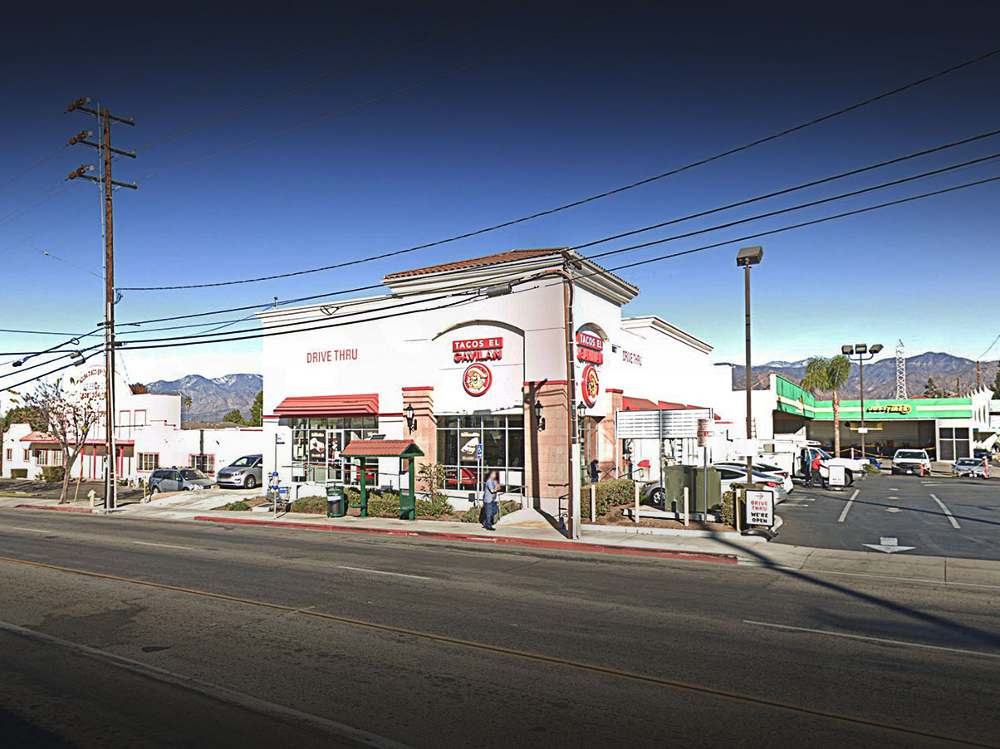
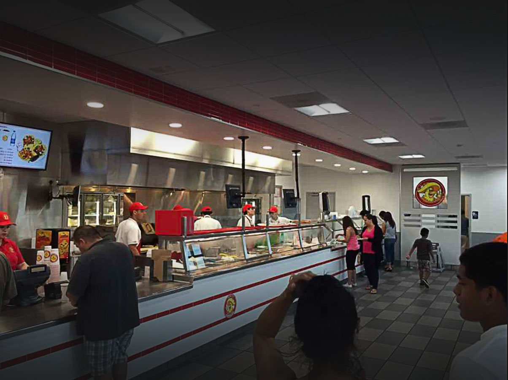

Location
We are located on the corner of Valley Blvd. and Boca Ave. in Los Angeles. Stop when you smell great Mexican food!
Contact Us!
Call or email us to schedule catering, order remotely, or even for a question.
(626) 123-4567
contact@antoniostaqueria.com